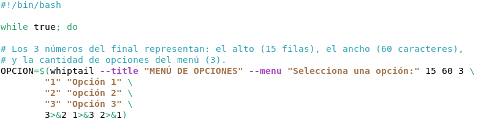
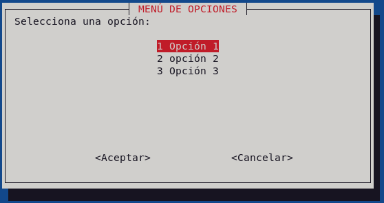
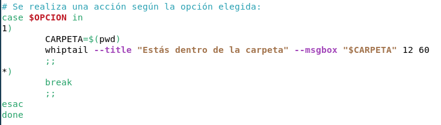
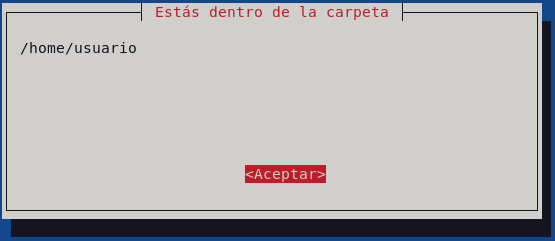

Objetivo: Crear un menú interactivo en la terminal usando la herramienta whiptail para consultar información del servidor mediante ventanas gráficas.
Crea un script llamado menu_control.sh en tu carpeta personal que ejecute un menú en bucle continuo para consultar la siguiente información del servidor Rocky Linux:
df -h /).free -h).cat ~/historial_restauraciones.log).Comienza escribiendo el bucle while true y la llamada a whiptail para desplegar el cuadro de opciones:

15 60 3: Definen el alto (15 filas), ancho (60 caracteres) y la cantidad de opciones del menú (3).3>&1 1>&2 2>&3: Permite capturar la opción seleccionada dentro de la variable OPCION, sin romper la pantalla gráfica del menú.Al ejecutar esta primera parte, la terminal desplegará el menú visual interactivo:

Agrega la estructura case para evaluar qué opción tocó el usuario y ejecutar una acción (o salir si selecciona *):

Cuando el usuario seleccione la Opción 1, el script ejecutará la acción dentro del caso y la mostrará en una ventana emergente (--msgbox):

chmod 700 menu_control.sh?--msgbox?